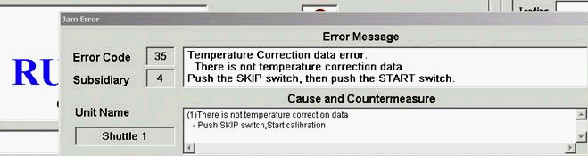

Service History
Subject: NS-8080 after press START button, encountered Temperature Correction data error
Handler Model: NS-8080 (S/N: 182224)
Controller: RC520 (S/N: 03-30136)
Date: 24 Feb 2012
Symptom
During buyoff for ASE NS-8080 S/N: 182224, after press START button, encountered Temperature Correction data error.

Even after restart handler or change setup file also same problem, all in Ambient Mode.
Only way to “solve” is to press Skip+Start 2 times.
Action
Email reply by Hidaka-san:
This is shuttle calibration error.
Based on chamber type handler, it has auto-adjustment of shuttle position.
(Purpose of thermal expansion)
The based data is adjusted by EPSON for before shipment.
The data is recorded each S/N.
So, the calibration data is controlled S/N.
It has the issue 2 of possibility as follows;
1. To change S/N by manual
2. To execute recovery by recovery CD
After calibration, there is no any error message if you do not change S/N.
did not change any serial number.
This morning, power up and pressed HOME after that press START, no problem.
Change to another setup file, also ok
Cause